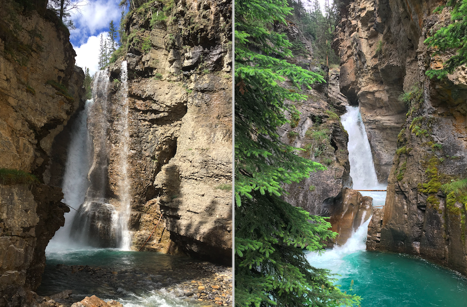
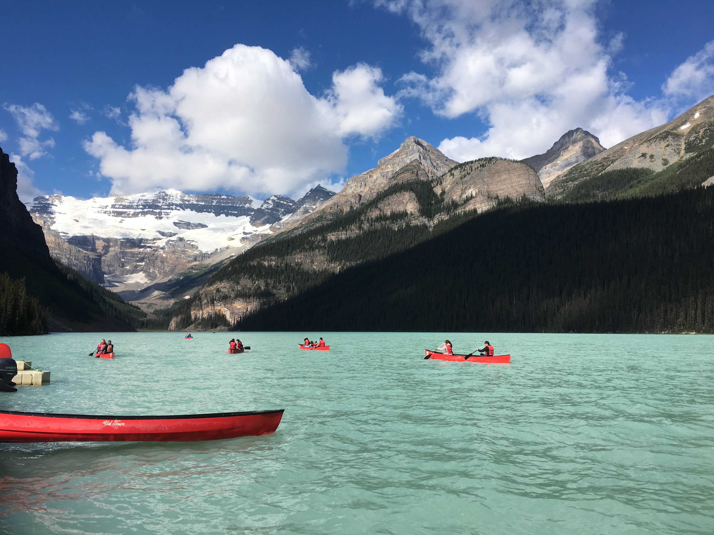
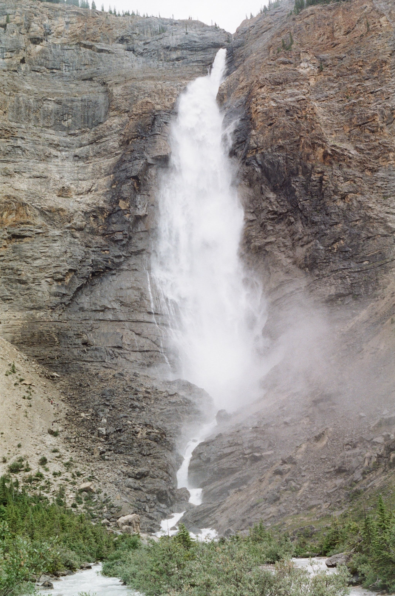
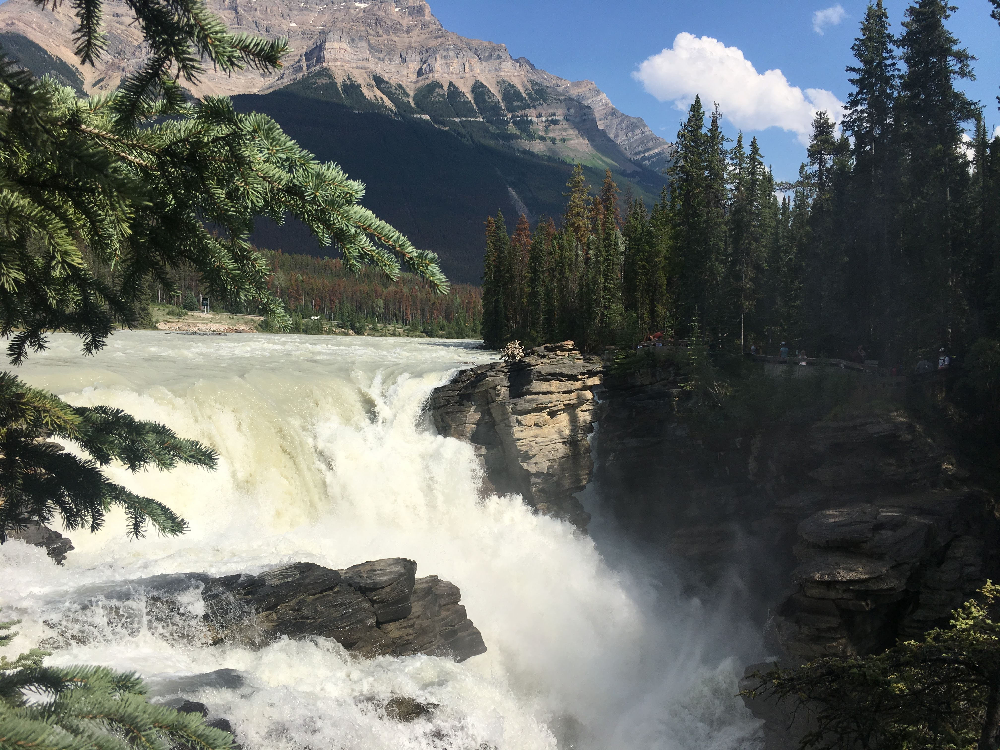
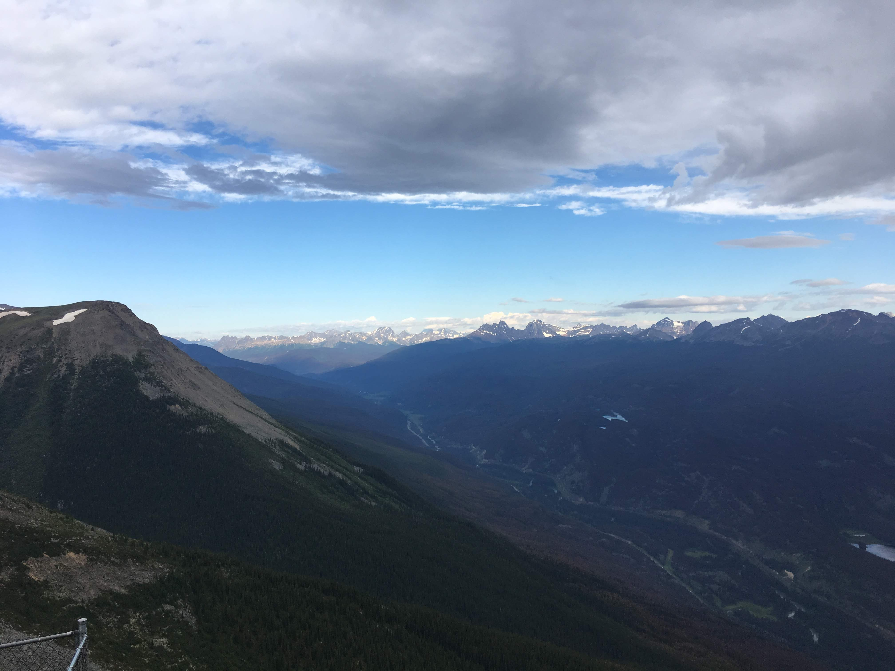
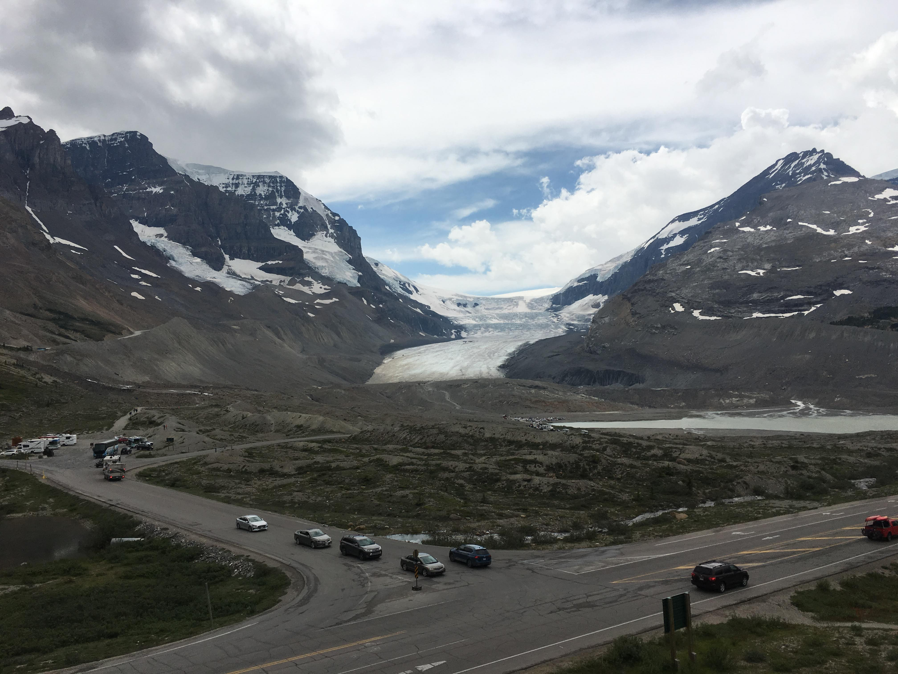

Quality of the best view
less important more importantOverall experience, things to do
less important more importantUncrowded; space to enjoy
less important more importantEasy access, no long hikes
less important more importantAffordability
less important more important-
Johnston Canyon (Banff)
This is a pretty popular tourist spot with a straightforward hiking trail and two waterfalls along the way.
The View: 3/5
The lower falls are far from the viewing site, and the water is not very powerful. The upper falls has a nice upper viewing area where you can see the drop from above.The Experience 4/5
The hiking trails are well paved and the trail to the upper falls are interesting. There are smaller waterfalls along the way as well and you can walk through rocky canyons where rivers run through. There is a cafe at the trailhead as well as a Parks Canada stand where they talk about wolf packs.The Space 1/5
The viewing areas are narrow bridges that extend over the canyon rivers. When it's crowded, it makes it very hard to see the falls if you're not at the end of the bridge. At the upper falls we had to wait 20 minutes in line to see the waterfall, and you can't stay for that long since there are people waiting for the only spot to see the view.Accessibility 2/5
Takes around 15 minutes to walk to the lower canyon and 45 minutes to walk to the upper canyon.Affordability 5/5
It's free. -
Lake Louise (Banff)
Lake Louise is a hamlet known for its turquoise, glacier-fed lake ringed by high peaks and overlooked by a stately chateau.
The View: 5/5
Trees, mountains, snow caps, and the lake. Depending on the lighting and time of year, the lake can be a milky blue or it could be reflective. Both look great.The Experience 4/5
Overpriced canoe rentals available at 120$ an hour. There are multiple hiking trails available, including a flat hike to a beach. There's also a small gift shop.The Space 4/5
Even when it's crowded there is a large perimeter around the lake to have an unobstructed view.Accessibility 3/5
Parking can be a big issue if you go around noon.Affordability 5/5
It's free. -
Takakkaw Falls (Yoho)
This is one of the highest waterfalls in Canada.
The View: 5/5
It's extremely ferocious and grand when looking at it up close.The Experience 2/5
There's only a single angle to view the falls at. There aren't any other supplementary activities around except for this cool 3-D model of the mountain topology around Takakkaw.The Space 5/5
You can walk very close to the falls themselves (including climbing a bit up the base of the cliff) along the river. This provides plenty of viewing spots both along the trail and at the base of the river.Accessibility 3/5
The view is only good when you walk around the river and cross the bridge. Getting to a decent viewing spot is around a 10 minute walk. Parking is plentiful though.Affordability 5/5
It's free. -
Athabasca Falls (Jasper)
A rather short but powerful waterfall that cuts through tall layers of rocks.
The View: 3/5
There are multiple marked viewing spots to look at this thick waterfall from multiple angles. You can pretty close to the water, with one area where you can get quite soaked. Not the most aesthetically pleasing waterfall, but you can follow the river down to its outlet.The Experience 5/5
In addition to the falls, there are extra attractions such as the rock potholes a beach area where the waterfall drains into. This adds for a more holistic experience.The Space 4/5
Some of the marked viewing spots of the falls are quite crowded.Accessibility 4/5
Right by the parking lot, but the best view of the waterfall takes a 5 minute walk around. The entire area is well-paved and easy to walk on.Affordability 5/5
It's free. -
Jasper Skytram (Jasper)
This is the highest and longest aerial tramway located in Canada, plopping riders atop The Whistlers Mountain.
The View: 4/5
Great sweeping view of Jasper from the observation deck. Other mountain ranges can be seen on the lookouts during the hike. There's even snow/ice at some points on the peak.The Experience 4/5
The top of the skytram has a cafe, gift shop and viewing areas around it. In addition, it has a full hiking trail that offers some even better views.The Space 5/5
There's plenty of viewing spots at the top of the SkyTram as well as the hiking trail.Accessibility 4/5
Plenty of parking and the tram station is right by the lot. The trail is around a 1 hour hike to the top, but you can still have great views without going up.Affordability 2/5
CAD$46.95 for an adult, CAD$24.95 for youth. -
Athabasca Glacier Tour (Jasper)
Ride one of the 20 "Ice Explorers" in the world to walk on one of the most famous glaciers of the Columbia Icefield.
The View: 5/5
From the Discovery Centre where you start the tour, you get a great panoramic view of the 5 notable glaciers of the Columbia Icefield. On the glacier itself there is a great 360 view of the surrounding mountains as well the as ice expanse of the glacier.The Experience 5/5
The Discovery Center has an amazing gallery downstairs that features interesting facts as well as a continuous screening of the critically acclaimed short "Through Ice and Time" (19 minute runtime). There is overpriced food upstairs as well as wifi. The ride on the Ice Explorer is also great as it features interesting factoids and history about glaciers told by the driver. There's also a very steep hill that the Explorer goes down on, which feels like a rollercoaster. The glacier itself has a sizable fenced off section where you can walk around on the ice. There's a small running stream where you can fill your bottle with glacier water. It tastes pretty bad.The Space 3/5
This place is super crowded during noon - especially the main floor of the Discovery Centre. The edges of the fenced area on the glacier can be crowded with people if there are many Ice Explorers arriving.Accessibility 5/5
Large parking area right by the Discovery Centre where the tour starts.Affordability 1/5
CAD$99 for an adult, CAD$50 for youth.
{kind=link}
{kind=link}
{kind=link}
{kind=link}
{kind=link}
{kind=link}